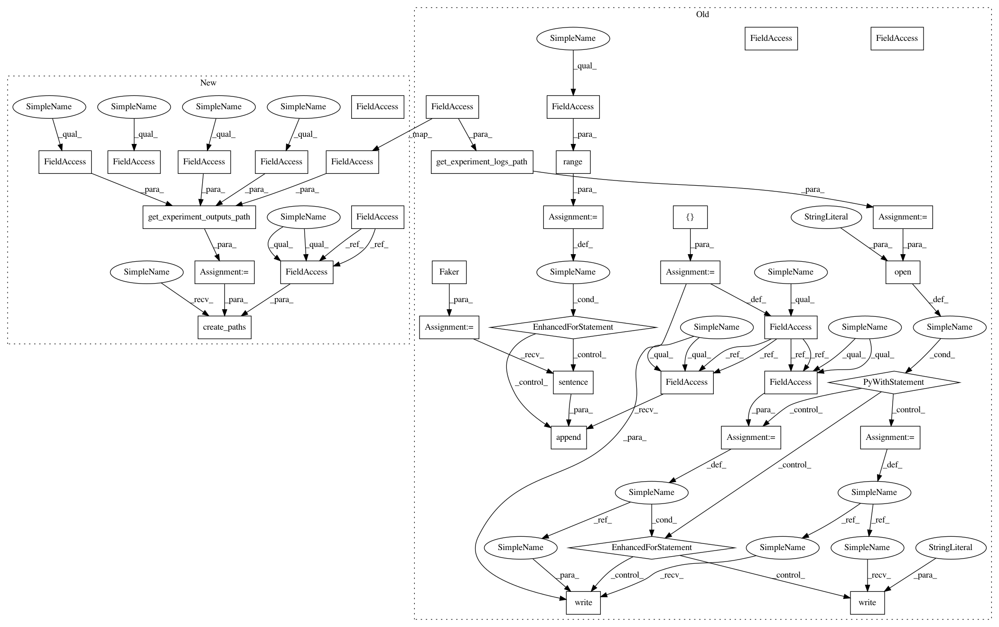

336dd0ec21ff45d8b74a8f4e9dbdc0c091eee6b2,tests/test_experiments/test_views.py,TestExperimentOutputsTreeViewV1,setUp,#TestExperimentOutputsTreeViewV1#,1887
Before Change
project.name,
experiment.id)
log_path = get_experiment_logs_path(experiment.unique_name)
create_experiment_logs_path(experiment_name=experiment.unique_name)
fake = Faker()
self.logs = []
for _ in range(self.num_log_lines):
self.logs.append(fake.sentence())
with open(log_path, "w") as file:
for line in self.logs:
file.write(line)
file.write("\n")
def test_get(self):
resp = self.auth_client.get(self.url)
assert resp.status_code == status.HTTP_200_OK
After Change
super().setUp()
project = ProjectFactory(user=self.auth_client.user)
experiment = ExperimentFactory(project=project)
self.url = "/{}/{}/{}/experiments/{}/outputs/tree".format(
API_V1,
project.user.username,
project.name,
experiment.id)
outputs_path = get_experiment_outputs_path(
persistence_outputs=experiment.persistence_outputs,
experiment_name=experiment.unique_name,
original_name=experiment.original_unique_name,
cloning_strategy=experiment.cloning_strategy)
create_experiment_outputs_path(persistence_outputs=experiment.persistence_outputs,
experiment_name=experiment.unique_name)
self.create_paths(path=outputs_path, url=self.url)
def test_get(self):
resp = self.auth_client.get(self.url)
assert resp.status_code == status.HTTP_200_OK
In pattern: SUPERPATTERN
Frequency: 3
Non-data size: 36
Instances
Project Name: polyaxon/polyaxon
Commit Name: 336dd0ec21ff45d8b74a8f4e9dbdc0c091eee6b2
Time: 2018-11-02
Author: mouradmourafiq@gmail.com
File Name: tests/test_experiments/test_views.py
Class Name: TestExperimentOutputsTreeViewV1
Method Name: setUp
Project Name: polyaxon/polyaxon
Commit Name: 336dd0ec21ff45d8b74a8f4e9dbdc0c091eee6b2
Time: 2018-11-02
Author: mouradmourafiq@gmail.com
File Name: tests/test_experiments/test_views.py
Class Name: TestExperimentOutputsTreeViewV1
Method Name: setUp
Project Name: polyaxon/polyaxon
Commit Name: 79bdfced13976388ff3542a1081c540761e0a006
Time: 2018-11-02
Author: mouradmourafiq@gmail.com
File Name: tests/test_experiments/test_views.py
Class Name: TestExperimentOutputsTreeViewV1
Method Name: setUp
Project Name: polyaxon/polyaxon
Commit Name: e295ddbb5b69ea7d142ed1bae575a6881f7f5d19
Time: 2018-11-02
Author: mouradmourafiq@gmail.com
File Name: tests/test_experiments/test_views.py
Class Name: TestExperimentOutputsTreeViewV1
Method Name: setUp